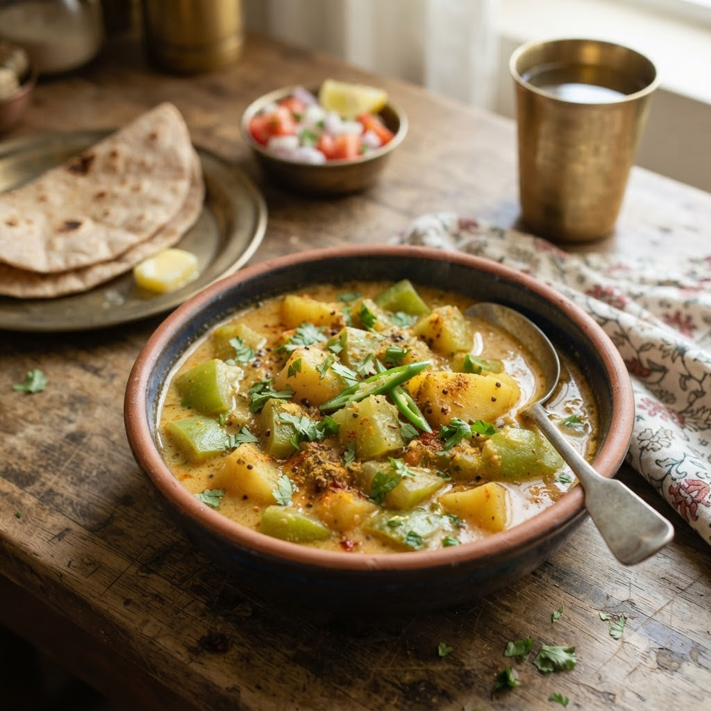

Lauki Aloo Curry (Bottle Gourd & Potato Curry)

Lauki Aloo Curry (Bottle Gourd & Potato Curry)
Chef Magic – Sauté + Boil Auto 22 min — Serves 4
Gluten-Free • Vegan • Everyday • Low-Oil
🧑🍳 Chef Magic🍽 Serves 4
Ingredients
- 1 lauki (bottle gourd), peeled and cubed
- 2 medium potatoes, cubed
- 1 tsp cumin seeds (jeera)
- 1 tomato, chopped
- 1/2 tsp turmeric (haldi)
- 1/2 tsp red chilli powder (lal mirch powder)
- 1/2 tsp coriander powder (dhania powder)
- 1 tbsp oil
- Salt to taste
- Chopped coriander (dhania) to garnish
Method
1Add oil and cumin seeds to the jar; select Sauté (Speed 2–4, ~130–160°C) until the seeds splutter.
2Add the potatoes and sauté for 4 minutes.
3Add the tomato, turmeric, chilli powder and coriander powder; sauté 3 minutes until the tomato softens.
4Add the lauki and salt, with a splash of water; select Boil (Speed 1–2, 100°C) and cook for 12 minutes until the lauki and potatoes are fully tender.
5Mash a few pieces lightly against the side of the jar to thicken the gravy slightly. Garnish with coriander.
Tip: Lauki releases a lot of its own water as it cooks — add only a splash of water at the start, or the curry ends up thin.